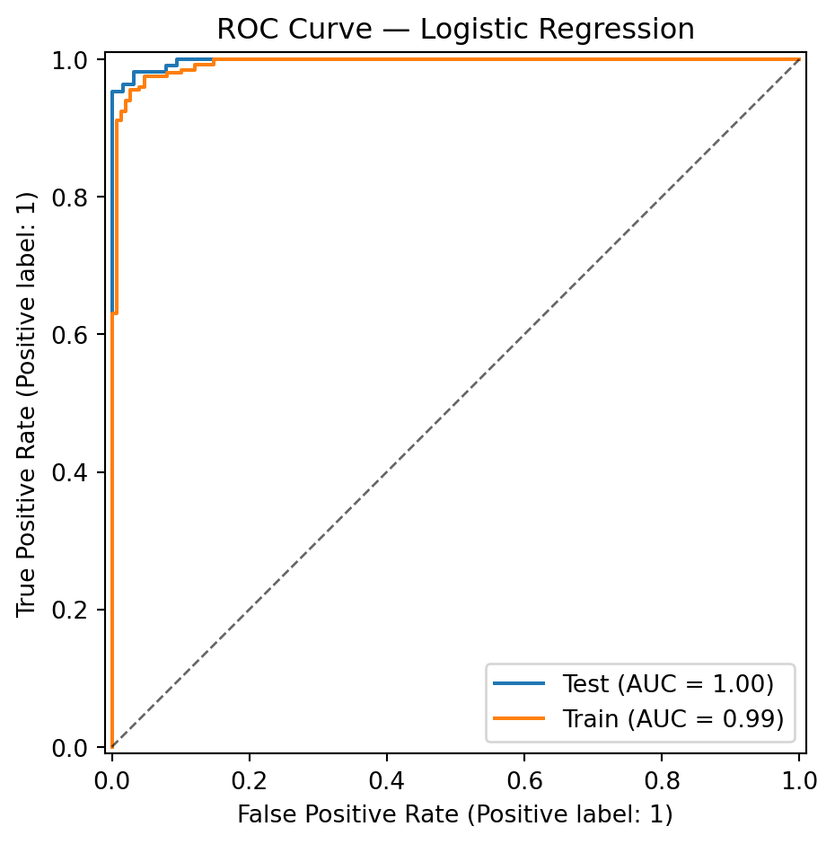

from sklearn.datasets import load_breast_cancer
from sklearn.model_selection import train_test_split
from sklearn.linear_model import LogisticRegression
from sklearn.metrics import PrecisionRecallDisplay
import matplotlib.pyplot as plt
# Load data
X, y = load_breast_cancer(return_X_y=True)
# Split
X_train, X_test, y_train, y_test = train_test_split(
X, y, test_size=0.3, random_state=42
)
# Fit model
clf = LogisticRegression(max_iter=5000)
clf.fit(X_train, y_train)
# Predict probabilities
y_proba_test = clf.predict_proba(X_test)[:, 1]
y_proba_train = clf.predict_proba(X_train)[:, 1]Breast Cancer
roc
scikit-learn
The following example is inspried by the scikit-learn documentation displaying a prediction of Breast Cancer and the ROC curve for both Train and Test sets.
Load data and fit a Logistic Regression
import plotly.io as pio
pio.renderers.default = "plotly_mimetype+notebook_connected"
from rtichoke import create_roc_curve
create_roc_curve(
{"train": y_proba_train, "test": y_proba_test},
{"train": y_train, "test": y_test},
size=400
)from sklearn.metrics import RocCurveDisplay
import matplotlib.pyplot as plt
fig, ax = plt.subplots(figsize=(6, 5))
# Plot ROC curves
roc_test = RocCurveDisplay.from_predictions(
y_test, y_proba_test, name="Test", ax=ax
)
roc_train = RocCurveDisplay.from_predictions(
y_train, y_proba_train, name="Train", ax=ax
)
# Add separate chance-level (diagonal)
ax.plot([0, 1], [0, 1], "k--", lw=1, alpha=0.6)
# Transparent background for Quarto / HTML
ax.set_facecolor("none")
fig.patch.set_alpha(0)
ax.set_title("ROC Curve — Logistic Regression")
plt.tight_layout()
plt.show()